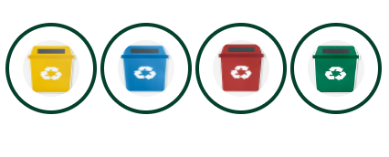

Sustentabilidade Ambiental
A sustentabilidade ambiental relaciona-se à capacidade de suporte,
resiliência e resistência dos ecossistemas.
Pode ser ainda definida como um processo de avaliação entre a economia, a sociedade e a
natureza.

Sustentabilidade Econômica
Sustentabilidade econômica é um conjunto de práticas econômicas,
financeiras e administrativas que visam o desenvolvimento econômico de um país ou empresa,
preservando o meio ambiente e garantindo a manutenção dos recursos naturais para as futuras
gerações.
Ler Mais
Sustentabilidade Social
Por definição, sustentabilidade social é um conjunto de ações que tem como
propósito melhorar a qualidade de vida da população como um todo,
visando reduzir as desigualdades sociais e ampliar o acesso aos direitos e serviços básicos, como
educação e saúde, por exemplo.
Ler Mais
O tripé da sustentabilidade
O conceito de sustentabilidade é fundamental para entender a
sustentabilidade. Ele é baseado na união dos três focos mais afetados: ambiente, sociedade e
economia.
Para que a sustentabilidade se torne uma realidade, é preciso que as três áreas sejam consideradas
em conjunto e as medidas criadas devem abranger todos esses interesses.
Ler Mais